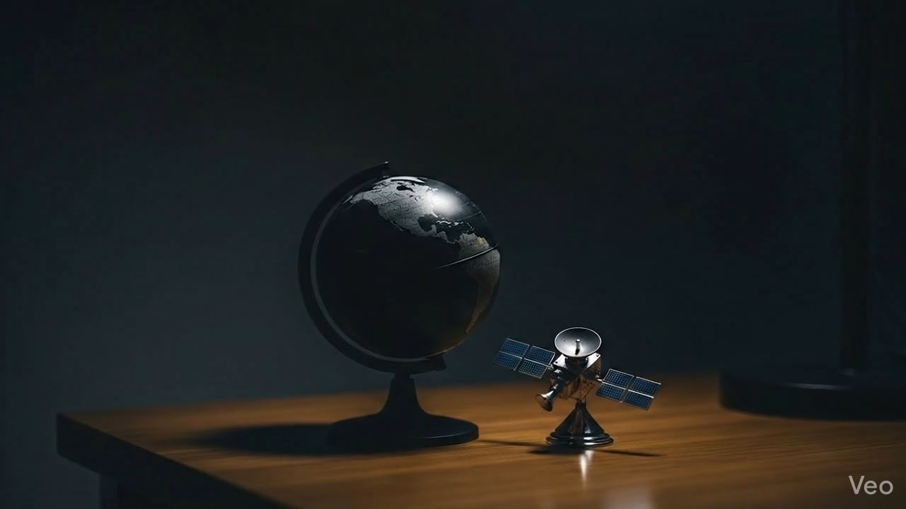

Chicago · Data Science · Product-Minded Analytics
James Liebel data science built to be read fast
Incoming University of Chicago student, Class of 2030, pursuing a B.S. in Data Science and Statistics. I build machine learning projects, AI-assisted tools, and interactive visual systems that make technical work legible to recruiters, clients, and teams.
Selected Work
Shipped and recruiter-readable
Python · Pandas · NumPy · SciPy
SQL · ETL · Data Warehousing
Scikit-learn · XGBoost · TensorFlow
FastAPI · React · Next.js · TypeScript
Power BI · DAX · PL-300 · D3.js
Prompting · Local AI · Automation
Chicago · UChicago 2030
Jamesliebel40@gmail.com
Python · Pandas · NumPy · SciPy
SQL · ETL · Data Warehousing
Scikit-learn · XGBoost · TensorFlow
FastAPI · React · Next.js · TypeScript
Capabilities
Technical skills at a glance.
Everything here branches out of moving data, modeling data, or explaining data. The site is organized around those three roots so a recruiter can read it quickly.
Skills Architecture
Three roots feed the whole portfolio.
Data engineering handles ingestion and structure. Data science turns that structure into prediction and testing. Data analysis turns technical output into something another person can actually read and use.
Root 01
Data Engineering
Used to ingest, clean, structure, and route data so the rest of the work has dependable inputs.
SQL
ETL Pipelines
Data Warehousing
Schema Design
Power Query
FastAPI
Root 02
Data Science
Used to build models, engineer features, test assumptions, and measure whether predictions are actually working.
Scikit-learn
XGBoost
TensorFlow
NLP
Feature Engineering
Model Evaluation
Root 03
Data Analysis
Used to explore patterns, shape dashboards, and communicate results in forms a recruiter or teammate can read quickly.
Power BI
DAX
PL-300
D3.js
GeoJSON
Matplotlib
Data Engineering
The engineering spine the rest depends on.
When work needs reliable inputs, structure, or a usable route into an app or dashboard, this is the layer doing the job.
SQLPower QueryETLData WarehousingSchema DesignFastAPI
Data Science
Modeling pulls signal out of cleaned data.
The strongest examples here are fraud detection, sentiment extraction, evaluation, and framing technical tradeoffs in plain language.
Scikit-learnXGBoostTensorFlowNLPEvaluationFeature Engineering
Data Analysis
Results need a readable surface.
Dashboards, maps, charts, and front-end delivery keep the work from ending as a notebook nobody opens.
Power BIDAXD3.jsGeoJSONSeabornResponsive UI
Languages + Core Stack
Daily tools for analysis and product delivery.
PythonPandasNumPySciPySQLJavaScriptTypeScriptReactNext.jsGitJupyter
AI Prototyping
Applied AI work, not vague AI interest.
PromptingLocal AIOllamaWorkflow DesignAutomationFast Iteration
Supporting Languages
Technical breadth around the main stack.
C++RJavaSeabornMatplotlibGitHub Pages
Where the tracks connect
The site is strongest where these categories overlap.
Engineering to Science
Clean data feeds better models.
Feature engineering, ETL cleanup, SQL prep, and schema decisions shape whether the modeling layer has usable training data at all.
Science to Analysis
Metrics need explanation to matter.
Benchmarks, recall, validation, and tradeoffs only become useful when framed as visuals, dashboards, or readable summaries.
Analysis to Product
Readable output forces cleaner systems.
When the final form is a usable site, map, or dashboard, the underlying structure has to be stronger, not weaker.
PythonSQLFastAPIReactNext.jsScikit-learnXGBoostTensorFlowPower BIDAXD3.jsETL PipelinesData WarehousingPromptingAutomationPythonSQLFastAPIReactNext.jsScikit-learnXGBoostTensorFlowPower BI
Featured Work
Start here for the clearest proof of work.
Select a project and the preview rail updates with the strongest signal: what it does, what it was built with, and why it matters.
01 · Machine Learning
Credit Card Fraud Detection
A fraud-detection workflow built for a heavily imbalanced dataset using XGBoost, Random Forest, SMOTE, and recall-focused evaluation.
91% recall
284k+ rows
XGBoost + SMOTE
Why it matters
- Built for class imbalance, fraud detection pressure, and model comparison.
- Uses targeted metrics and resampling instead of relying on easy aggregate accuracy.
- Strong signal for practical machine learning with business-facing consequences.
Stack snapshot
02 · AI Product Prototype
JimAI AI Workspace Prototype
An AI-assisted workspace prototype for research, code generation, and workflow testing, built through prompting, product iteration, and local AI workflows.
FastAPI
React + Vite
Ollama
Why it matters
- Shows practical AI building without overstating low-level systems expertise.
- Combines interface design, prompting, and automation into a usable prototype.
- Signals applied product thinking around AI workflows.
Stack snapshot
03 · Client Delivery
CustomStrat Advisory Website
A live client website built and deployed for CustomStrat Advisory with reusable content structure, responsive design, and a custom domain.
customstrat.com
Next.js 14
GitHub Pages
Why it matters
- Shows shipped execution for a real audience instead of another classroom demo.
- Pairs AI-assisted iteration with grounded implementation and deployment discipline.
- Adds strong front-end and client-facing delivery signal alongside the data work.
Stack snapshot
04 · NLP
News Sentiment Analysis
An NLP pipeline that turns unstructured news headlines into quantitative sentiment features for downstream modeling.
VADER
TF-IDF
Feature Engineering
Why it matters
- Shows work beyond tabular data using text analytics tooling.
- Converts qualitative inputs into structured model-ready features.
- Supports both data science and analytics narratives.
Stack snapshot

Visualizations
Dashboards, maps, and embedded work.
The goal here is the same as the rest of the site: turn technical output into something another person can grasp quickly. One featured Power BI-style dashboard and six existing D3 projects are linked directly.
Power BI Dashboard (PBIX)
Power BI
Embedded report
KPIs · tiles · filters
Total Revenue$8.2M+14.3% vs. last year
Gross Margin42.7%+3.1 pts vs. target
Active Customers12,480+9.8% vs. last quarter
Revenue by Region
Americas lead with $3.4M, followed by EMEA at $2.6M and APAC at $2.2M. Bars highlight both scale and YoY growth.
Top Product Categories
Hardware, software, and services shown in a stacked comparison to reveal both mix and margin contribution.
Monthly Revenue Trend
12-month line chart with target markers and a focus on recent acceleration.
Filters
Year, region, segment, product category, and deal size slicers reshape the dashboard for focused views.
Segment Deep Dive
Enterprise contributes the majority of revenue while SMB shows the fastest logo growth.
Power BIPBIX
Download PBIX
Background
Background, summarized.
Use the tabs for the short version of experience, education, and leadership. The rocket sequence above turns those same sections into a scroll-controlled narrative.
GitHub Activity · Last 12 Months
JL
Technical work with clear outputs.
Incoming University of Chicago student focused on predictive modeling, analytics workflows, and interactive delivery. The strongest signal is not one resume bullet. It is the overlap of machine learning, interfaces, dashboards, and product-minded framing.
What stands out
- Builds classification and predictive workflows with measurable evaluation results.
- Uses Python and SQL across data analysis, AI-assisted prototyping, and workflow design.
- Presents work through D3.js, deployed sites, dashboards, and other recruiter-readable formats.
Current direction
- Seeking internships where statistical rigor and communication both matter.
- Interested in analytics engineering, data science, and ML-adjacent product roles.
Signal snapshot
Validation85%+Typical supervised benchmark range.
Recall91%Fraud detection headline result.
Scale284k+Rows in the fraud dataset.
Project-based experience with shipped work.
The strongest signal comes from self-directed builds that combine analysis, interfaces, prototyping, and real deployment.
JimAI / AI Workspace Prototype
- Built an AI-assisted local workspace prototype for research, code generation, and workflow experimentation.
- Worked with FastAPI, React/Vite, local AI workflows, prompting, and automation-oriented interfaces.
- Focused on practical product structure and usability rather than low-level model engineering.
CustomStrat Advisory Website
- Built and deployed customstrat.com using Next.js 14, TypeScript, Tailwind CSS, GitHub Pages, and a custom domain.
- Used AI-assisted iteration to speed up UI and content prototyping, then refined the result into a production-facing site.
What this signals
- Comfort moving between data, interface, and deployment problems.
- Work gets packaged for people to use, not just graded.
Formal training supported by project work.
The academic path is still early, supported by completed certifications and hands-on work in modeling, analytics, and visualization.
University of Chicago
- B.S. in Data Science and Statistics.
- Quantitative training paired with modern computational tooling.
Certifications
- IBM Data Science Professional Certificate.
- Microsoft PL-300 Power BI Data Analyst.
Delivery focus
- Practical grounding in data science workflows.
- Visualization and reporting credibility.
- Strongest signal still comes from shipped project work.
Leadership here is practical and communication-focused.
The profile also shows workshop delivery, peer guidance, and presenting analytical work clearly under pressure.
Co-President, Machine Learning Club
- Runs workshops on neural networks, evaluation, and practical AI project framing.
- Helps other students move from vague AI interest to concrete implementation.
DECA Competitor
- Presented data-backed business analysis and strategic recommendations.
- Built stronger judgment and composure under time pressure.
Contact
- Available for Summer 2026 internships.
- Jamesliebel40@gmail.com
- github.com/James-Liebel
Resume
One-page version
Use the print action below to save a PDF directly from the page.
JAMES LIEBEL
Chicago, IL | Jamesliebel40@gmail.com | linkedin.com/in/james-liebel | github.com/James-Liebel
Professional Summary
Incoming University of Chicago student (Class of 2030) pursuing Data Science and Statistics. Builds machine learning projects, AI-assisted prototypes, and interactive data products with Python, SQL, FastAPI, React, Power BI, and D3.js. Seeking a Summer 2026 internship in data science, analytics, or ML-adjacent product work.
Selected Experience
CustomStrat Advisory Website
Live deployment
- Built and deployed customstrat.com using Next.js 14, TypeScript, Tailwind CSS, GitHub Pages, and a custom domain.
- Used AI-assisted iteration to speed UI and content prototyping while keeping the implementation maintainable and production-facing.
JimAI / AI Workspace Prototype
Independent build
- Built an AI-assisted workspace prototype for research, code generation, and workflow experimentation.
- Worked with FastAPI, React/Vite, local AI workflows, and automation-oriented tooling.
Selected Projects
Credit Card Fraud Detection
Machine learning
- Built an imbalanced-class classification workflow with XGBoost, Random Forest, SMOTE, and recall-focused evaluation.
News Sentiment Analysis
NLP pipeline
- Turned unstructured financial headlines into quantitative sentiment features using VADER, TF-IDF, and feature engineering.
Technical Skills
Machine Learning & AI
Scikit-learn, XGBoost, TensorFlow, NLP, Feature Engineering, Model Evaluation, Prompting, Local AI
Programming & Data
Python, Pandas, NumPy, SciPy, SQL, FastAPI, React, Next.js, TypeScript, JavaScript, Git, Jupyter, C++, R, Java
Workflow & Visualization
ETL Pipelines, Data Warehousing, Schema Design, Power Query, Power BI, DAX, PL-300, D3.js, GeoJSON, Matplotlib, Seaborn, GitHub Pages, Responsive UI, Workflow Design, Automation
Education & Leadership
University of Chicago
Expected June 2030
B.S. in Data Science and Statistics.
Certifications: IBM Data Science Professional Certificate; Microsoft PL-300 Power BI Data Analyst.
Leadership: Co-President, Machine Learning Club; DECA competitor, 2022 to 2024.